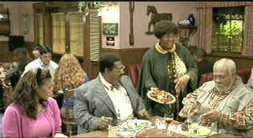

| Nutty Professor
II: The Klumps/C,A |
| Universal/2000/107/ANA
1.85 |
The Nutty Professor II: The Klumps might have been called The
Klumps Dine Out. That's the best part of the film. Klump family meals are momentous
marathons of gluttony and bathroom buffoonery. Symphonies of manic mouth stuffing, the Klumps have
a way with their food. And they can make you laugh at the dinner table despite any reservations you
might have made at a fancy restaurant. Let's face it: Klumps know their food. The secret of a good
Klump movie is to keep them busy feasting. The highlight of each of the two Nutty
Professor movies are these broad dinner tableaus featuring all of the Klumps showing off their
best table manners.
 |
| Eddie times three. Seamless special effect!
©Universal |
Sherman Klump is still a rock solid influence on the rest of the
Klump family. Good nature in tact, once again Sherman does battle to contain his alter ego, Buddy
Love. This time out the formula gets out of the bottle and a limp script prevents Sherman from
showing his best traits; thankfully, Buddy is less "out there." There is much more of the
Klump family, but but they only sing at the dinner table. There are those "nuggets" of
disgusting toilet humor to contend with and when there's restraint, there's laughter. But how many
laughs can you get from gaseous sounds. There ought to be a law: One gaseous utterance per movie
allowed and no more.
Clearly. one of the main stars of the film is the hilarious make-up work of Rick
Baker. Baker provides star Eddie Murphy with miraculous make-up to change magically from character
to character. Eddie Murphy is nothing short of amazing in the various Klump incarnations. Each
Klump has their own distinctive voice, mannerisms, and style, yet they are clearly part of the same
family. Janet Jackson provides a sweet love interest for Sherman.
The Nutty Professor II is packaged as a special edition from
Universal. Director Peter Segal is on hand to deliver an audio commentary. Segal's observations are
realistic. He recognizes when the film is pandering to audience tastes. The nicely made Spotlight
on Location features comments by director and behind the scenes shots. There are deleted scenes, an
extended restaurant scene and a couple of outtakes. A highlight of the special edition are
two Klump make-up sessions presented with in time lapse reveal. Another feature is Janet
Jackson's music video Doesn't Really Matter. Story board comparisons and a theatrical
trailer complete the special edition package.
A splendid DVD, The Nutty Professor II delivers every Klumped up
detail with dead on accuracy. You peruse Klump make-up magic, background details are sharp and
there is no obvious edge enhancement manipulation. Color is fully saturated and perfectly
controlled. Contrast provides theatrical snap to the home theater images and brightness levels are
outstanding. Dean Semler's bright camera style literally jumps off the screen. The Dolby Digital
5:1 Surround Sound is active and antic, announcing disgusting details with more punch than I'd care
to comment on. |
|
|
|

Selections from the feature archive include articles on Akira Kurosawa,
Frank Darabont, Blonde Bimbos, Hollywood
Street Gangs, or Vietnam:
The Hollywood Pariah, and many more...

Is North by Northwest Hollywood's definitive exploration of the nose? From schnozzles to
beezeers, film mavens make the most of the foremost. Click on Mount Hitchcock for more.
 . .
The
Movie Poster Archive includes extensive poster images from the films of stars like Susan Hayward,
Kirk Douglas, Katharine Hepburn and many more. Our featured star is Cary Grant.


An on-line Home Theater magazine with excellent hardware reviews,
including thorough and responsible research. Check it out.
The name tells all.

Information on film sound in theaters and home theaters. Lots of helpful information provided in a
handsome interface.

A self-proclaimed bastion of irreverence place where Joe
Public smacks the heck out of the studio execs that treat us like cattle.
 Direct from the corridors of the Home Theater Forum, Home Theater Talk is the
newest place on the Net to discuss everything home theater. Friendly atmosphere and knowledgeable
folks are the secret ingredients. Direct from the corridors of the Home Theater Forum, Home Theater Talk is the
newest place on the Net to discuss everything home theater. Friendly atmosphere and knowledgeable
folks are the secret ingredients.
|